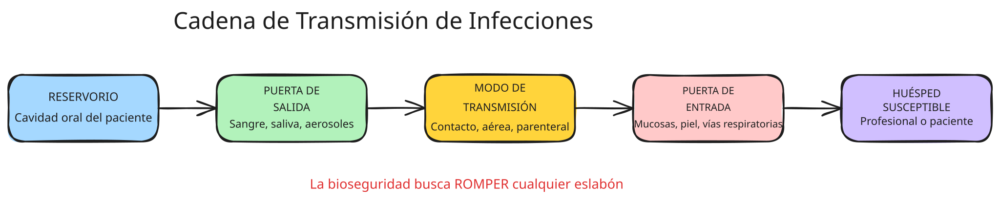
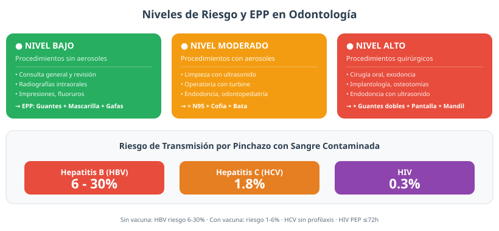
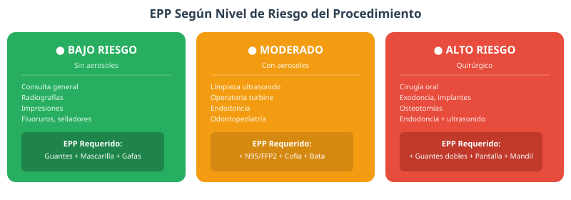
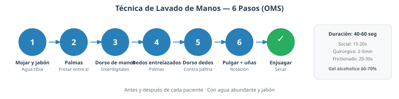
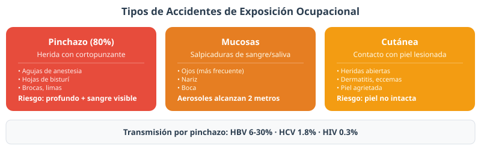

Generalidades de la Bioseguridad
Introducción a la Bioseguridad
▼¿Qué es la bioseguridad?
La bioseguridad no es simplemente un conjunto de reglas a memorizar, sino una cultura de seguridad que permea todas las actividades clínicas. En odontología, cada procedimiento genera aerosoles, salpicaduras y contacto directo con mucosas del paciente, lo que convierte a los profesionales dentales en uno de los grupos con mayor riesgo de exposición ocupacional.
Cadena de transmisión de infecciones

La cadena de transmisión consta de cinco eslabones. La bioseguridad busca romper cualquier eslabón para prevenir la infección:
- Reservorio: Donde vive y se multiplica el microorganismo. En odontología, el principal reservorio es la cavidad oral del paciente, que alberga más de 700 especies bacterianas diferentes, además de virus, hongos y otros patógenos.
- Puerta de salida: Vía por la que el microorganismo abandona el reservorio. Incluye la sangre, la saliva, los aerosoles generados por el turbine dental, las secreciones respiratorias y los fluidos corporales.
- Modo de transmisión: Cómo viaja el microorganismo de un huésped a otro. Los más relevantes en odontología son: contacto directo (con sangre o saliva), contacto indirecto (con instrumental contaminado), vía aérea (aerosoles que alcanzan 2 metros) y vía parenteral (pinchazos con agujas).
- Puerta de entrada: Vía por la que el microorganismo accede al nuevo huésped. Incluyen las mucosas (ojos, nariz, boca), la piel con heridas abiertas y las vías respiratorias.
- Huésped susceptible: Persona que puede infectarse. En odontología, tanto el profesional como el paciente y los asistentes pueden ser huéspedes susceptibles.
Precauciones estándar
Las precauciones estándar sustentan toda la práctica de bioseguridad en odontología. Implican que el odontólogo debe utilizar guantes, mascarilla y gafas de seguridad no solo con pacientes diagnosticados con enfermedades infecciosas, sino con cada paciente que atiende en su consultorio.
Evolución histórica de la bioseguridad
Las prácticas de bioseguridad han evolucionado a lo largo de más de 150 años, desde los primeros descubrimientos sobre la transmisión de infecciones hasta los protocolos basados en evidencia que se aplican actualmente:
- 1847 — Ignaz Semmelweis: Médico húngaro que trabajaba en la maternidad del Hospital General de Viena. Observó que la mortalidad por fiebre puerperal era del 18% en la sala atendida por médicos, frente al 2% en la atendida por comadronas. Concluyó que los médicos transportaban "partículas cadavéricas" desde la sala de autopsias. Implementó el lavado de manos con cloruro de cal, demostrando que la prevención de la contaminación podía salvar vidas. Aunque su teoría fue rechazada en su época, sentó las bases de la asepsia médica.
- 1867 — Joseph Lister: Cirujano británico influenciado por los trabajos de Louis Pasteur sobre los microorganismos. Introdujo la antisepsia quirúrgica utilizando ácido fenico para desinfectar instrumental, heridas y las manos del cirujano. Las infecciones postoperatorias disminuyeron drásticamente, y Lister fue reconocido como el padre de la cirugía antiséptica.
- 1895 — Wilhelm Röntgen: Descubrimiento de los rayos X. La radiología se convirtió rápidamente en herramienta diagnóstica esencial en odontología, pero el uso sin protección causó numerosos daños, impulsando el desarrollo de protocolos de protección radiológica.
- 1929 — Alexander Fleming: Descubrimiento de la penicilina, inaugurando la era de los antibióticos. Sin embargo, el uso indiscriminado condujo a la aparición de cepas resistentes, subrayando la importancia de la prevención.
- 1983 — CDC (Precauciones Universales): Los Centros para el Control y la Prevención de Enfermedades publicaron las "Precauciones Universales", estableciendo que toda sangre debe tratarse como potencialmente infecciosa. Revolución conceptual en bioseguridad.
- 1996 — CDC (Precauciones Estándar): Evolución hacia las "Precauciones Estándar" actuales, que integran las precauciones universales con las precauciones basadas en la transmisión (aérea, gotas, contacto). Son el fundamento de la bioseguridad contemporánea.
Cinco factores de riesgo en odontología

- Riesgo biológico: Es el más importante y frecuente. Incluye la exposición a sangre, saliva, fluidos corporales y aerosoles que contienen microorganismos patógenos como HIV, HBV, HCV, virus del Herpes Simple y Mycobacterium tuberculosis. Los aerosoles del turbine dental pueden transportar microorganismos hasta dos metros y permanecer suspendidos hasta sesenta minutos.
- Riesgo químico: La amalgama dental contiene mercurio como componente principal y genera vapores tóxicos durante su manipulación y pulido. El formaldehído, presente en fijadores y formocresol, es un agente cancerígeno. Otros químicos incluyen solventes orgánicos, ácidos grabadores, resinas compuestas y monómeros.
- Riesgo físico: Radiaciones ionizantes (rayos X intraorales y panorámicas), ruido del turbine dental (superior a 80 decibelios), vibración transmitida por las piezas de mano, pinchazos con agujas (80% de accidentes de exposición) y descargas eléctricas por equipos mal conectados.
- Riesgo ergonómico: Posturas estáticas mantenidas durante procedimientos de larga duración, movimientos repetitivos de la muñeca y los dedos, alcances forzados fuera de la zona óptima de trabajo, vibración de cuerpo entero y falta de pausas activas.
- Riesgo psicosocial: Estrés laboral por exceso de demandas de trabajo, síndrome de desgaste profesional (burnout), conflictos interpersonales con pacientes o compañeros, violencia laboral y sobrecarga cognitiva en procedimientos de alta precisión.
Equipo de Protección Personal
▼Equipo de Protección Personal

El EPP es la última línea de defensa en la cadena de protección. Aunque las medidas de control administrativos (capacitación, protocolos) y de ingeniería (ventilación, sistemas de succión) son fundamentales, el EPP impide el contacto directo entre el profesional y los agentes patógenos.
- Guantes de látex: Ofrecen la mayor sensibilidad táctil y resistencia a la perforación. Sin embargo, pueden causar reacciones alérgicas tipo I en aproximadamente el 1-6% de los trabajadores expuestos, debido a las proteínas naturales del látex.
- Guantes de nitrilo: Alternativa recomendada para trabajadores alérgicos al látex. Son resistentes a la penetración química, tienen buen tacto y su color azul facilita la detección de perforaciones.
- Guantes de vinilo: Opción más económica pero con menor resistencia a la perforación. Se recomiendan únicamente para procedimientos de bajo riesgo.
- Mascarilla quirúrgica: Filtra gotas y partículas mayores a 5 micras. Debe ajustar bien al rostro y cambiarse cada 2-4 horas o antes si se humedece.
- Mascarilla N95/FFP2: Filtra aerosoles menores a 0.3 micras con 95% de eficiencia. Obligatoria en procedimientos que generan aerosoles (ultrasonido, turbine, cirugía).
- Pantalla facial: Protege las mucosas oculares, nasales y orales contra salpicaduras directas de sangre y saliva.
- Gafas de seguridad: Protección ocular contra aerosoles y salpicaduras.
- Mandil o bata: Impermeable, de manga larga. Obligatorio en cirugía, extracciones y procedimientos con alta salpicadura.
- Cofia: Protege el cabello de contaminación por aerosoles y salpicaduras.
Selección del EPP · Lavado de Manos
▼Selección del EPP por nivel de riesgo
La selección del EPP se basa en una evaluación de riesgos del procedimiento, no del diagnóstico del paciente. Todo paciente debe ser tratado con las mismas precauciones.
- Bajo riesgo (sin aerosoles): Consulta general, radiografías, impresiones, fluoruros → guantes + mascarilla quirúrgica + gafas de seguridad.
- Riesgo moderado (con aerosoles): Limpieza dental con ultrasonido, operatoria con turbine, endodoncia, odontopediatría → guantes + mascarilla N95 + gafas + cofia + bata.
- Alto riesgo (quirúrgico): Cirugía oral, exodoncia, implantes, endodoncia con ultrasonido → guantes dobles + mascarilla N95 + gafas + pantalla facial + cofia + mandil impermeable.
Inmunización del personal
- Hepatitis B (OBLIGATORIA): Esquema de 3 dosis (0, 1 y 6 meses). Después del esquema, se debe verificar la seroconversión mediante la determinación de anticuerpos anti-HBs. Un título igual o superior a 10 mUI/mL indica protección adecuada. El riesgo de contagio por pinchazo sin vacuna es del 6-30%.
- Influenza: Vacuna anual, preferiblemente antes de temporada de invierno (marzo-abril en Ecuador).
- Tétanos-difteria (Td): Refuerzo cada 10 años.
Técnica de lavado de manos (OMS)

Duración: 40-60 segundos. Tipos: Social (15-20s con jabón común), quirúrgico (2-5 min con jabón antiséptico), frictionado con gel alcoholico 60-70% (20-30 segundos, cuando no hay suciedad visible).
Accidentes e Incidentes de Trabajo
▼Tipos de AEE

- Pinchazo con cortopunzante (80%): Heridas con agujas de anestesia, hojas de bisturí, brocas, limas de endodoncia. El riesgo de transmisión depende del volumen de sangre, la concentración del patógeno y la profundidad de la herida.
- Contaminación de mucosas: Salpicaduras de sangre o saliva en ojos, nariz o boca. Los aerosoles del turbine pueden alcanzar 2 metros y permanecer suspendidos hasta 60 minutos.
- Exposición cutánea: Contacto de piel con lesiones abiertas (heridas, dermatitis) con sangre o fluidos contaminados.
Probabilidad de transmisión por patógeno
- Hepatitis B (HBV): 6-30% de transmisión por pinchazo con sangre HBV+ (sin vacuna). Con vacuna, el riesgo se reduce a 1-6%.
- Hepatitis C (HCV): 1.8% de transmisión. No existe vacuna disponible. La infección crónica puede progresar a cirrosis y cáncer hepático.
- HIV: 0.3% de transmisión. Baja tasa pero consecuencias devastadoras. La profilaxis post-exposición (PEP) reduce significativamente el riesgo si se inicia dentro de las primeras 72 horas.
Niveles de riesgo en procedimientos
- Bajo: Consulta, radiografías, impresiones, fluoruros.
- Moderado: Limpieza con ultrasonido, operatoria, endodoncia, odontopediatría.
- Alto: Cirugía oral, exodoncia, implantes, fisura ósea.
Actos y condiciones subestándar
- Actos subestándar (88%): No usar EPP, reutilizar material descartable, no lavarse las manos, recapsular agujas manualmente, no reportar accidentes, trabajar bajo efectos de sustancias.
- Condiciones subestándar (10%): Iluminación inadecuada (<500 lux), pisos resbalosos, equipos defectuosos, contenedores de residuos llenos, falta de ventilación en áreas de esterilización.